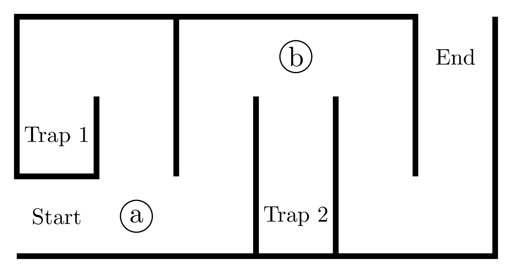

7 Writing down a logic
So far we have learned that proofs, programs, and diagrams are synonymous through something called the Curry-Howard-Lambek correspondence. And we just discussed the first step into “proof” by discussing what it means to make propositions and judgments. There were many choices to be made since judgments came in several flavors, e.g. theoretical, computational, and practical judgments did not even agree on the meaning of truth. Armed with that reality it is time to confront how we can write down the logic behind our proofs, programs, and diagrams so that it reflects accurately the kind of judgments we want to make. This all starts with grammar school. This is not a joke, but it is ironic that this author should be trusted with saying anything accurate about grammar.
7.1 Grammar school
Grammar is a system of rules, and we have already argued that logic is a system of rules, so on that level it is natural to expect some relationship between grammar and logic. How deep that connection goes is the subject of the line between formal logic and philosophy. We wont tempt that question but just investigate some familiar looking examples for patterns and discover the importance of trees to reasoning reliably.
One tool to discern the grammar of a language is to diagram the sentences. Consider the sentence diagramed by the Reed-Kellogg system:
The students of algebra love or hate grammar.
The diagram shows there are two paths from student to grammar, one through love and the other through hate. It is possible that to some readers the diagram explains the relationship better than the sentence.
A sentence diagram according to a grammar is called a parse diagram and the act of checking grammar is called parsing.
Whether consciously or not, when you read mathematics you follow a grammar as well.
Consider the formula \(8(7+3)^2\). We can diagram it as follows:
To perform the algebra you can follow the paths in the diagram: combine 7 and 3, then square the result, and finally multiply by 8. The diagram shows the grammar of the formula and how to evaluate it.
Programs are also written in a grammar.
The statistics programming language R has a grammar that makes it easy to pass data through a series of operations using the pipe operator |>. For example, the following code reads a data file and filters the rows where \(x>0\).
When we diagram the grammar of this code we see a flow of that data that matches the intent of the program.
At this point we ought to be convinced that grammar is at least capable of explaining the order in which we reason or compute. But there are some oddities possible in natural language that fight the idea of grammar as a reliable tool for reasoning. So we will work to exclude those oddities first.
7.2 Context-Free Grammars and Trees
Let us first draw out a difficulty with natural language grammar that we do not have to worry about in most mathematics. It is the notion of making local changes to a sentence that break the grammar of the rest of the sentence. Let us return to our example sentence.
Begin with the sentence
The students of algebra love or hate grammar.
If we convert “love” (third person plural) to “loves” (third person singular) we hit a rule in English grammar called “subject-verb agreement”. Since “loves” is singular, we need to back-propagate to “students” (plural) to “student” (singular). That then triggers a forward propagation to change “hate” (third person plural) to “hates”.
The student of algebra loves or hates grammar.
If this is all sounding a bit confusing imagine its impact inside a discussion of arithmetic or a program.
If we compare a similar alteration to an algebraic formula changing the 7 to a 9 in \(8(7+3)^2\), then the grammar seems completely unaffected. Likewise local changes in programs do not alter the grammar. Keep in mind those changes certainly may alter the meaning and outcome of the formula or program!
Compared with the original formula \(8(7+3)^2\), the altered formula \(8(9+3)^2\) can use the same diagram with \(9\) replacing \(7\).
The code
changed to
also uses the same diagram.
Productions and Backus-Naur Form
It seems best that we look to grammars that minimize of note entirely eliminate the need to re-wind or fast-forward when parsing the grammar of our logical sentences. This keep the meaning clear and packeted so we can reason as we go gaining confidence in our reasoning. A grammar like this is said to be context-free because it does not matter if we drop the rule into a larger context. The grammar rule is unaffected. Compare that with rules of grammar that are affected by the larger context in which the sentence fragment being parsed is written.
A context-free grammar is a list of pairs [Name, Expression], called productions, where an expression can be a string of
- a constant character from an alphabet,
- a variable name (from an alphabet or font that cannot be confused with a constant character), or
- a name of a production, possibly even the one current name.
A string of characters and variables is said to be accepted by the grammar if it can be generated by a finite sequence of productions beginning from the first production rule. The accepted strings are called sentences of the grammar.
Historically these pairs are called productions and they are written in a form called Backus-Naur Form (BNF) as follows:
Variables in BNF are those things we surround with <...>. Because a name can be reused we often find multiple productions with the same name
It can be convenient to combine these into a single production using the vertical bar | as follows:
The vertical bar is read as “or”. If you plan to use | as part of you own grammar then just repeat your productions rules and avoid this abbreviation.
The natural numbers are whatever we use to count. That means we need some symbol to reset the count, I will use _ (the nothing character, like a cleared chalkboard upon which to write), and a symbol to advance the current count, I will use ▶.
This grammar accepts the strings _, ▶, ▶▶.
Notice we can compress this grammar into a single line using the vertical bar | to distinguish options and putting the constants inline.
In modern notation we would write this as
This grammar accepts 0, 1:=(++0), 2:=(++(++0)), and so on. The symbol ++ is called successor in mathematics and incrementor in computation.
You may prefer to rename these strings _, ▶, ▶▶ as \(1,2,3,\ldots\) or \(0,1,2,\ldots\). Doing so ignites a debate about whether or not natural numbers begin at \(0\), but that is a largely pointless fight.
The actual drama should be focussed on the ‘\(\ldots\)’ (ellipses) which just gives up on being precise. When forced to explain what these ellipses mean we generally wind up recreating some sort of a grammar for natural numbers, not the strings accepted by those grammars! The distinction is similar to describing the language of English as its grammar (which might fit into a single book) or as all the sentences that can be written in with the English grammar. So whether you choose to think of natural numbers with symbols, \(1,2,3,\ldots\) or \(0,1,2\ldots\), or even binary \(0000, 0001, 0010, 0011,\ldots\), remember that a precise finite description of natural numbers is possible as a grammar.
The constants are True and False and we can write a grammar for them as follows:
This accepts the strings True and False and nothing else. We can annotate these with the name of the rule that accepted it, here True:Boolean and False:Boolean. To add a conjunction operator AND we can write
(True AND False):Conj, (True AND (True AND False)):Conj
and so on. Their parse diagrams are
Add a disjunction operator OR to the Boolean grammar above and a negation operator NOT. Then explain why NOT(True OR False) is accepted by your grammar and give its parse diagram.
In the grammar:
This grammar accepts the strings 1, 2+3, 4*5, (6+7)*8, and so on.
Add a subtraction operator - and a division operator / to the arithmetic grammar above. Then explain why (1+2) / 3 is accepted by your grammar and give its parse diagram.
Mathematical grammars and \(\LaTeX\)
In mathematics we permit a notation that is more than left-to-right. For example \[ \frac{1+x}{2+y}\qquad \sum_{i=1}^5 a_n\qquad \int_0^1 \sqrt{e^{7x}} dx \] To explain this we can use a grammar that flattens the notation into a left-to-right string. One such grammar is known as \(\TeX\) by famed Mathematician/Computer Scientist Donald Knuth and its extension \(\LaTeX\) by Turing Award winner Leslie Lamport. These are worth learning in some form as they are used everywhere form math, logic, computer science and data science. Here the basics.
- Write normal words but use escape characters
\to indicate special symbols. For example\alphamakes \(\alpha\) and\betamakes \(\beta\). - Dollar signs surround math expressions. For example
$x^2$makes \(x^2\) and$e^{7x}$makes \(e^{7x}\). In some systems use\(and\)instead of$to surround math expressions. - Exponents are written with
^and subscripts with_. For examplex^2makes \(x^2\) ande^{7x}makes \(e^{7x}\). \frac{a}{b}makes fractions \(\frac{a}{b}\)\sqrt{x}makes square roots \(\sqrt{x}\)\sum_{i=1}^5 a_nmakes summations \(\sum_{i=1}^5 a_n\)\int_0^1 \sqrt{e^{7x}} dxmakes integrals \(\int_0^1 \sqrt{e^{7x}} dx\)
You can place \(\LaTeX\) inside many file formats including Markdown, Quarto, and Jupyter notebooks. It also works with LLMs and many word processors including Microsoft Word and Google Docs. When a project is large enough it may be beneficial to work exclusively in \(\LaTeX\) which ranges from shared webpages like Overleaf and open source installations TeX User Group.
This is only a sliver of what is known as the Chomsky hierarchy of grammars and you can read more about this here.
Parse the following formulas.
- \(x^2 + 3x + 2\) (warning without parentheses this has more than one option).
- \(-(2^{2^n})\)
- \(\frac{\sqrt{e^{7x}}}{2+y}\)
The parsing of formulas in mathematics is an underutilized tool for seeing the makeup of instructions. Later in the topic of Calculus we can use these trees to label the operations of limits, derivaitives, and some integrals (concepts to be defined in time). So do not underestimate the value of practicing these parsing tasks.
Parse the following programs. Try on your own then check your work with an LLM.
- In R:
result <- mean(c(max(data), min(data))) - In Python:
2**3 + 4 * 5. Note that**is the exponent operator in Python. - In C++:
In C++ the << operator is similar to R’s pipe but reads right-to-left so the strings are piped to the cout which is what appears as output.
7.3 Trees: a source of unambiguous reasoning
Now look at the examples of math and program parse diagrams and you will notice a difference to parsing of many natural languages: the graphs have only one path between any two nodes. This is such an important property that it has a name.
A tree is a diagram of nodes and edges in which between any two nodes there is exactly one path that does not revisit a node.
A directed acyclic graph (DAG) is a diagram of nodes and oriented edges in which we cannot go in circles following the direction of any arrows.
In the graph above there are two different paths from A to E, the first through B and the second through C. So this is not a tree. But if we remove even one edge on one of these two paths then we get a tree. For example:
When we add direction to the edges of a graph we can consider paths that only follow the arrows and so a graph which is not a tree can nevertheless become a directed acyclic graph (DAG) that is not a tree. For example:
The non-redundant paths in a proper maze (one in which there are no alternate paths) form a tree.

Note that the non-redundant paths in an improper maze (one in which there can be alternate paths) form a DAG.
The point of trees is that they have unique paths so when we given instructions between two nodes these cannot be misinterpreted. So when it comes to understanding logic, if we can organize the grammar to only build trees then we are guaranteed that everyone who reads the logic in that grammar understands it the exact same way we meant it. No double meanings and no ambiguity can exist. This is a perfect property to have if we can get it. Fortunately context-free grammars do exactly that. The only missing element is to know where to begin reading nodes of the tree. So let us choose one node as the start.
A tree is rooted if we designate one node as the root and all edges are oriented away from the root. The root is the starting point of the tree and all other nodes are its descendants. The nodes furthest from the root are called leaves.
The parse diagram of a context-free grammar is a rooted tree. In particular when we parse a sentence in the language of a context-free grammar we always get the exact same diagram.
We call this now the parse tree or the abstract syntax tree (AST).
Draw the path tree of the following maze. Make sure to reach each deadend.

7.4 Proof Trees & Natural Deduction
Trees have been so successful at organizing our intension with programs that they ought to be useful in organizing other forms of reasoning, including proofs of judgments. In fact, the Curry-Howard-Lambek correspondence seems to make this a requirement. So what we do now is replace “parse trees” with “proof trees”. This process today goes by Natural Deduction and it is the backbone of most of modern mathematical logic.
Recall our earlier proof of the proposition
Theorem: If \(n\) is even then \(n^2\) is even.
To be even means we have evidence \(k\), a natural number, where \(n=2k\). From that we derive \[ n^2=(2k)^2=2(k\cdot 2\cdot k) \] So we produced evidence \(j=k\cdot 2\cdot k\) that \(n^2\) is even. So from a truth, \(n=2k\), we derived another truth \(P:\) \(n^2\) is even.
As a diagram this proof is the following tree:
By writing the proof as a tree we start to notice that we got information from context of natural numbers, such as the associative property of multiplication. The combination of events ends with the claim we want.
A proof by Natural Deduction is a whose diagram is a tree rooted at the conclusion. The leaves of the proof tree are called the premises and the internal nodes are called deductions.
Classical Logic Proofs may be given as DAGs
In many forms of logic we are permitted to reuse a premise multiple times in a proof. You saw that in our earlier example of the properties of administrators who can both add and remove users. Yet it was not always true as we saw with resources like a USB port which can only be used by one device. Now when a judgment style is allowed to reuse a premise we often do not bother to track how many uses we make. The effect can be that within the writing of a proof we simply state the premise we use once and extract from it multiple facts. Strictly speaking this does not diagram as a tree. For example:
This is however a directed acyclic graph (DAG) since there is no cycle in the diagram. So the implicit assumption maid by the author is that we are permitted to copy a premise for reuse. Doing so separates the DAG into a proof tree as required. Here’s the above DAG converted into a tree by copying the premise:
This brings up the question of how important it is to insist on only one conclusion to a list of premises. If we have a lot of facts that follow why not simply list them all?
In reality this is a perfectly standard form of proof. Mathematics often follows a proof in natural deduction with “Corollaries” or “scholia” which are just terms meant to say that we extract a different consequence form the existing argument. Since the interpretation of DAG verses tree is immaterial to many systems of judgment this causes relatively little harm to clarity. Yet be on the look out for those judgments that consider the total number of uses of our premise. Some things do not last forever and there the reuse of a premise can be highly illogical.
Below is a proof of the Division Algorithm we created in our first topic here. Draw the proof tree for this proof.
Theorem (Division Algorithm): For natural numbers \(m\) and \(n\) with \(n>0\) there exist unique integers \(q\) and \(r\) such that \(m=q\cdot n+r\) and \(0\le r<n\).
Proof: If \(m< n\) then take \(q=0\) and \(r=m\) so that \(m=0\cdot n+r\). Otherwise \(-n+m\) is smaller than \(m\) and there is a some memoized (previously found) \(q\) and \(r<n\) where \(-n+m=n\cdot q+r\). Add \(n\) to both sides so that \[ m=n+-n+m-n=n+n\cdot q+r=n\cdot (1+q)+r \] So \(m=n\cdot q'+r\) with \(r< n\). \(\Box\)
If some step appears to use some fact you know from the context of natural numbers, e.g. \(n+n\cdot q=n\cdot (1+q)\), you may state it as a premise. These will indicate what hidden assumption this proof depends on. Often these offer clues for future inventions, such as inventing division of polynomials.
Warning If you involve support online you may fine a far more complicated answer than you are expected to use here. For example you make see \(\exists\) (“There exists”) and \(\wedge\) (“and”). While it is ok to use, consider replacing the symbols with words and seek an explanation that would make sense to your Babylonian tile setter as well.
When a proof becomes a maze
It is not always obvious how to take a proof in words and turn it into a tree or DAG. You can remind yourself why this must by asking: what sense is there in going in circles in your proof? Unfortunately, even seasoned mathematicians are not always conscious that proof are trees. Making things worse is the goal of many authors to introduce a flare to their writing of proofs reorganizing sentences, inserting digressions, and changing words just for variety. A surprisingly problematic unnecessary rule by many authors is to never start a sentence with a symbol. In implementing this rule many authors take to reordering the information of a proof, giving the conclusion before the premise or using a variable before telling readers it is a variable. It is not entirely whims of authors to blame. Proofs are written often a lines of text and if we consider a tree or DAG described row by row top to bottom we can see we are forced to fold information into pockets of our text not unlike the build of a maze.
The issues notwithstanding, knowing that proofs exist as trees suggests strategies to reorganize a proof once we have constructed it. We can diagram the tree and then organize the layout so that nearby connections remain together whenever possible. We can give diagrams as part of the proof when the connections get complicated. We can prune branches and give them as individual smaller trees (“refactoring”). So while flattening a tree into a linear discussion is is never a clean job, avoid being a lazy author so that your proofs do not become a maze.
7.5 Summary
- Grammar converts sentences into diagrams through a process called parsing resulting a parse diagram.
- Trees are diagrams in which any two nodes have a unique path between them. They give unambiguous instructions.
- Context-free grammars parse as trees while remaining capable of expressing formulas and programs.
- Proofs, when organized by Natural Deduction are trees rooted in the conclusion and whose leaves are the premises.
- Mathematical grammar involves spacial notation such as subscripts and superscripts, groupings, fractions etc. The \(\LaTeX\) system is a grammar that flattens these into a left-to-right string of characters. It is widely used in mathematics, logic, computer science, and data science.